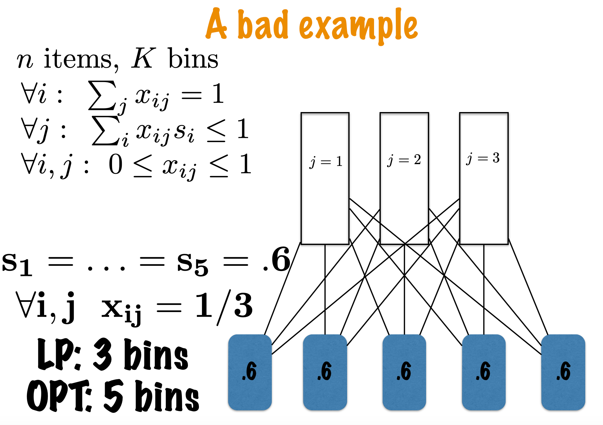
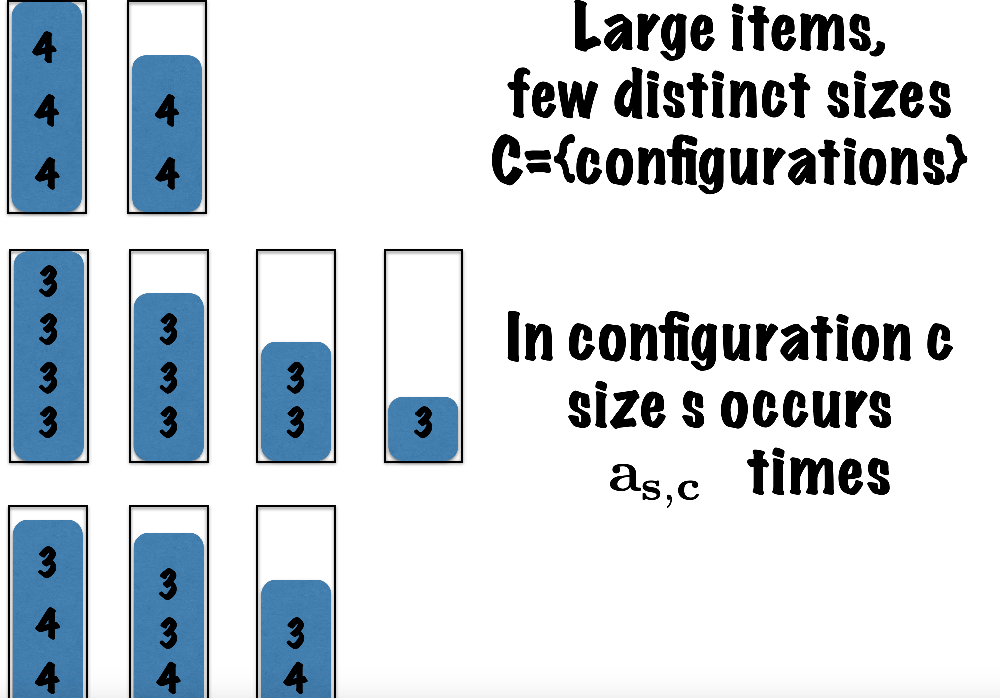

Approximation Algorithms Week 3--Bin Packing,Linear Programming and Rounding
课程来自Coursera
Bin packing problem
- 定义：\(𝑁\)件物品，每件物品有体积\({𝑠_𝑖}\), 不失一般性地，可以约定\({s_i}\leq1\), 有容量为\(1\)箱子, 要用尽可能少的箱子容纳所有的物品。
- \(NP-hard\)问题
The Next Fit algorithm
- 思想：依次考虑每个物品, 如果这个物品能放入当前箱子, 就放入, 否则关闭当前箱子, 打开一个新的箱子放入这个物品。
- 近似比：
- \(proof\):把编号相邻的箱子配对, 考虑箱子\(2i−1\)和箱子\(2i\)。我们打开了箱子\(2i\), 说明箱子\(2i−1\)里面的物品体积之和加上箱子\(2i\)里面的第一个物品的体积, 必然是大于\(1\)的，否则按照算法流程会把那个物品放入箱子\(2i−1\).
- 设按照Next Fit算法用了\(k\)个箱子，其中最后一个箱子的编号为\(L\)
- 有\(O P T \geq\left\lceil\sum_{i=1}^N s_i\right\rceil \geq\left\lceil\sum_{i=1}^{L-1} s_i\right\rceil\)
- 因为\(\sum_{i=1}^{L-1} s_i>\left\lfloor\frac{K}{2}\right\rfloor\)，\(\left\lfloor\frac{K}{2}\right\rfloor\)是整数，所以\(\left\lfloor\frac{K}{2}\right\rfloor \leq\left\lceil\sum_{i=1}^{L-1} s_i\right\rceil-1\)
- 于是有\(\frac{K-1}{2} \leq\left\lfloor\frac{K}{2}\right\rfloor \leq O P T-1\)
- 即\(K \leq 2 O P T-1\)
- 算法的紧性：
- (\(2𝑂𝑃𝑇−2\)的例子)有\(4n\)个物品，满足\(S_{2 i-1}=\frac{1}{2}, S_{2 i}=\frac{1}{2 n}\)，显然\(OPT=n+1\),此时\(NF\)给出的结果为\(2n\).
A Linear program for bin-packing（failed）
- 整数规划模型：
- 变量：\(\mathrm{x}_{\mathrm{ij}} \in\{\mathbf{0}, \mathbf{1}\}\)，当物品\(i\)放在箱子\(j\)中时，\(x_{ij}=1\).
- 约束：
- 约束1:因为每件物品只能放到一个箱子中，对于物品\(b\)，\(\mathrm{x}_{\mathrm{b} 1}+\mathrm{x}_{\mathrm{b} 2}+\mathrm{x}_{\mathrm{b} 3}+\mathrm{x}_{\mathrm{b} 4}=1\)
- 约束2:每个箱子内物体的体积和需小于1，\(\mathbf{x}_{\mathrm{aj}} \mathbf{s}_{\mathbf{a}}+\mathbf{x}_{\mathrm{bj}} \mathrm{s}_{\mathrm{b}}+\cdots+\mathrm{x}_{\mathrm{fj}} \mathrm{s}_{\mathbf{f}} \leq \mathbf{1}\)
- 线性规划模型：
- \(n\) items, \(K\) bins \(\forall i: \quad \sum_j x_{i j}=1\) \(\forall j: \quad \sum_i x_{i j} s_i \leq 1\) \(\forall i, j: 0 \leq x_{i j} \leq 1\)

a special case1:small things
- 例子：当所有物品的\(s_i<1/3\)，当关闭一个箱子的时候(除了最后一个箱子), 这个箱子里面物品体积之和必然\(\geq2/3\), 否则还可以接着装物品。 假设用了\(𝐾\)个箱子, 第一个装入第\(K\)个箱子的物品编号是\(𝐿\), 那么有 \[ \boldsymbol{O P T}>\sum_{i=1}^N s_i>\sum_{i=1}^{L-1} s_i \geq \frac{2}{3}(K-1) \]
因此\(K \leq \frac{3}{2} O P T+1\)
- 相应地，可以推导所有物品的\(s_𝑖<\epsilon\)的时候, 有\(K \leq \frac{1}{1-\epsilon} O P T+1\)
a special case2:large items，few sizes
符号及定义：
Configuration: 指将若干物品装入一个箱子的某种方法。比如往一个箱子中装入2个size为0.2的物品和1个size为0.6的物品。因为物品较大，所以configuration较少。

\(A_{c,s}\):对于configuration \(𝑐\)，一个箱子中有\(A_{C,S}\)个size为\(s\)的物品。
近似算法：
Linear Programming:
Input：\(S={size}\)，对于每种size\(s\)，有\(n_s\)个物品.
Output:\(C=\{configurations\}\)，对于configuration\(c\)所需的箱子数\(x_c\)。
目标函数：\(\sum_{\mathbf{c}} \mathbf{x}_{\mathbf{c}}\)
约束：\(\sum_{\mathbf{c}} \mathbf{a}_{\mathbf{s}, \mathbf{c}} \mathbf{x}_{\mathbf{c}} \geq \mathbf{n}_{\mathbf{s}}\)
Rounding：求出实数线性规划的解向上取整。
lemma：假设物体都满足size\(s\geq\epsilon\)，一共有\(k\)种不同的size，那么不同configuration的数量\(\leq K^{\frac{1}{\epsilon}}\)
- 因为\(s\geq\epsilon\)，所以对于某个size\(s\)的configuration数量\(\leq\frac{1}{\epsilon}\)，因此对于不同的size不同configuration的数量\(\leq K^{\frac{1}{\epsilon}}\)。
算法分析：
- 正确性：由线性规划的约束可知此算法是正确的
- 近似比：\(O P T \geq \sum_c x_c \geq \sum_c\left(\left\lceil x_c\right\rceil-1\right)\)，configuration数量\(\leq K^{\frac{1}{\epsilon}}\)，因此近似解\(\leq O P T+K^{\frac{1}{D}}\)。
a special case3:large items, many distinct sizes（less special）
本博客所有文章除特别声明外，均采用 CC BY-NC-SA 4.0 许可协议。转载请注明来自 xxl's blog！